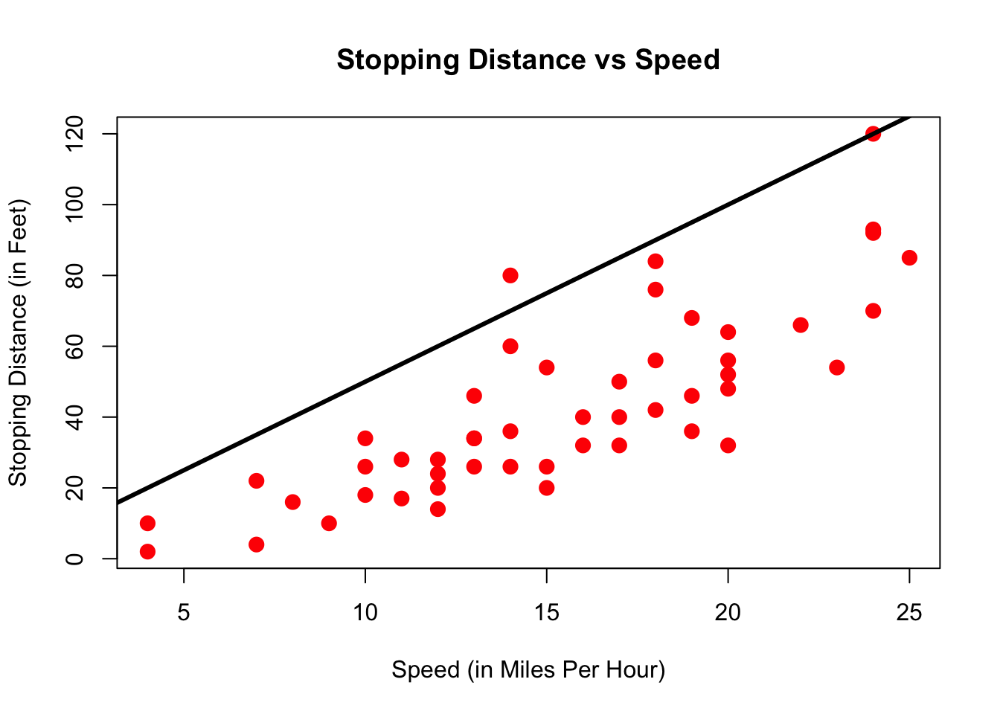

Chapter 3 Linear Regression
3.1 Data on Cars
We will look at the built-in cars dataset. Let’s get a view of this by just typing View(cars) in Rstudio. You can see something like this:
#OUT> speed dist
#OUT> 1 4 2
#OUT> 2 4 10
#OUT> 3 7 4
#OUT> 4 7 22
#OUT> 5 8 16
#OUT> 6 9 10We have a data.frame with two columns: speed and dist. Type help(cars) to find out more about the dataset. There you could read that
The data give the speed of cars (mph) and the distances taken to stop (ft).
It’s good practice to know the extent of a dataset. You could just type
dim(cars)#OUT> [1] 50 2to find out that we have 50 rows and 2 columns. A central question that we want to ask now is the following:
3.1.1 How are speed and dist related?
The simplest way to start is to plot the data. Remembering that we view each row of a data.frame as an observation, we could just label one axis of a graph speed, and the other one dist, and go through our table above row by row. We just have to read off the x/y coordinates and mark them in the graph. In R:
plot(dist ~ speed, data = cars,
xlab = "Speed (in Miles Per Hour)",
ylab = "Stopping Distance (in Feet)",
main = "Stopping Distance vs Speed",
pch = 20,
cex = 2,
col = "red")
Here, each dot represents one observation. In this case, one particular measurement speed and dist for a car. Now, again:
How are speed and dist related? How could one best summarize this relationship?
One thing we could do, is draw a straight line through this scatterplot, like so:
plot(dist ~ speed, data = cars,
xlab = "Speed (in Miles Per Hour)",
ylab = "Stopping Distance (in Feet)",
main = "Stopping Distance vs Speed",
pch = 20,
cex = 2,
col = "red")
abline(a = 60,b = 0,lw=3)
Now that doesn’t seem a particularly good way to summarize the relationship. Clearly, a better line would be not be flat, but have a slope, i.e. go upwards:

That is slightly better. However, the line seems at too high a level - the point at which it crosses the y-axis is called the intercept; and it’s too high. We just learned how to represent a line, i.e. with two numbers called intercept and slope. So how to choose the best line?
3.1.2 Choosing the Best Line
Suppose we have the following set of 9 observations on x and y, and we put the best straight line into it, that we can think of. It looks like this:

Figure 3.1: The best line and its errors
The red arrows indicate the distance of the line to each point and we call them errors or residuals, often written with the symbol \(\varepsilon\). An upward pointing arrow indicates a positive value of a particular \(\varepsilon_i\), and vice versa for downward pointing arrows. The name residual comes from the way we write an equation for this relationship between two particular values \((y_i,x_i)\) belonging to observation \(i\):
\[ y_i = \beta_0 + \beta_1 x_i + \varepsilon_i \tag{3.1} \]
Here \(\beta_0\) is the intercept, and \(\beta_1\) is the slope of our line, and \(\varepsilon_i\) is the value of the arrow (i.e. a positive or negative number) indicating the distance between the actual \(y_i\) and what is predicted by our line. In other words, \(\varepsilon_i\) is what is left to be explained on top of the line \(\beta_0 + \beta_1 x_i\), hence, it’s a residual to explain \(y_i\). Now, back to our claim that this is the best line. What exactly characterizes the best line?
Wait a moment, why squared residuals? This is easy to understand: suppose that instead, we wanted to just make the sum of the arrows in figure 3.1 as small as possible (that is, no squares). Choosing our line to make this number small would not give a particularly good representation of the data – given that errors of opposite sign and equal magnitude offset, we could have very long arrows (but of opposite signs), and a poor resulting line. Squaring each error avoids this (because now negative errors get positive values!) We illustrate this in figure 3.2. This is the same data as in figure 3.1, but instead of arrows of length \(\varepsilon_i\) for each observation \(i\), now we draw a square with side \(\varepsilon_i\), i.e. an area of \(\varepsilon_i^2\). You will see in the practical sessions that choosing a different line to this one will increase the sum of squares.

Figure 3.2: The best line and its SQUARED errors
3.1.3 Ordinary Least Squares (OLS) Coefficients
The method to estimate \(\beta_0\) and \(\beta_1\) we illustrated above is called Ordinary Least Squares, or OLS. There is a connection between the estimate for \(\beta_1\) - denoted \(\hat{\beta}_1\) - in equation (3.1) and the covariance of \(y\) and \(x\) - remember how we defined this in section 2.3. In the simple case shown in equation (3.1), the relationship is
\[ \hat{\beta}_1 = \frac{cov(x,y)}{var(x)}. \tag{3.2} \] i.e. the estimate of the slope coefficient is the covariance between \(x\) and \(y\) divided by the variance of \(x\). Similarly, the estimate for the intercept is given by
\[ \hat{\beta}_0 = \bar{y} - \hat{\beta}_1 \bar{x}. \tag{3.3} \]
where \(\bar{z}\) denotes the sample mean of variable \(z\).
3.1.4 Correlation, Covariance and Linearity
It is important to keep in mind that Correlation and Covariance relate to a linear relationship between x and y. Given how the regression line is estimated by OLS (see just above), you can see that the regression line inherits this property from the Covariance. A famous exercise by Francis Anscombe (1973) illustrates this by constructing 4 different datasets which all have identical linear statistics: mean, variance, correlation and regression line are identical. However, the usefulness of the statistics to describe the relationship in the data is not clear.

The important lesson from this example is the following:
3.1.5 Non-Linear Relationships in Data
Suppose our data now looks like this:

Putting our previous best line defined in equation (3.1) as \(y = \beta_0 + \beta_1 x + u\), we get something like this:
Figure 3.3: Best line with non-linear data?
Somehow when looking at 3.3 one is not totally convinced that the straight line is a good summary of this relationship. For values \(x\in[50,120]\) the line seems to low, then again too high, and it completely misses the right boundary. It’s easy to address this shortcoming by including higher order terms of an explanatory variable. We would modify (3.1) to read now
\[ y_i = \beta_0 + \beta_1 x_i + \beta_2 x_i^2 + \varepsilon_i \tag{3.4} \]
This is a special case of multiple regression, which we will talk about in chapter 5. You can see that there are multiple slope coefficients. For now, let’s just see how this performs:

Figure 3.4: Better line with non-linear data!
3.2 DGP and Models
When we talk about a model in econometrics, we are making assumptions about how \(y\) and \(x\) are related in the data. For example, we have repeatedly seen the following equation,
\[ y_i = \beta_0 + \beta_1 x_i + \varepsilon_i \]
which is a particular kind of model. What generated our data, on the other hand, is an unknown mechanism that we want to investigate: it’s the data generating process (GDP), and our model is our assumption about how we think the GDP could look like. A natural question that comes to mind here, is how to discriminate between models, or in other words: which model to choose?
3.2.1 Assessing the Goodness of Fit
In our simple setup, there exists a convenient measure for how good a particular statistical model fits the data. It is called \(R^2\) (R squared), also called the coefficient of determination. It is a statistic that makes use of a benchmark model, against which to compare any given model we may have in mind. Suppose we posit our standard representation of the best line:
\[ y_i = \beta_0 + \beta_1 x_i + \varepsilon_i \tag{3.5} \]
and let us write down the benchmark model as follows:
\[ y_i = \beta_0 + \varepsilon_i \tag{3.6} \]
As you can see, the benchmark model in (3.6) is a model with an intercept only. You will see in one of our apps that this delivers an estimate of the mean of \(y\). It is a benchmark because it does not include any explanatory variables, so we can compare against this other models which do in fact contain some \(x\)’s. Back to our \(R^2\) statistic: there are several equivalent definitions, and for our present case we will use the following.
The coefficient of determination (R squared) is defined by \[R^2 = 1 - \frac{\text{SSR our model}}{\text{SSR benchmark}}.\] In the simple linear model, we have that \(R^2 \in [0,1]\), where \(R^2 = 1\) would indicate that our model is a very good fit to the data, and vice versa for \(R^2 = 0\). You can interpret the value of \(R^2\) as the fraction of variation in outcome \(y\) that is accounted for by explanatory variable \(x\).
The workings of this statistic are illustrated in the following figure 3.5. There, the left panel is our well-known depiction of the sum of squared residuals (SSR) of our model \(y_i = \beta_0 + \beta_1 x_i + \varepsilon_i\). The right panel shows the SSR of \(y_i = \beta_0 + \varepsilon_i\). Ideally, each red square would be small relative to its blue counterpart, indicating that our model has a small residual at a given observation.
Figure 3.5: Left panel: SSR from our model. Right panel: SSR from benchmark (mean only) model. \(R^2\) compares the size of each red square to each blue square.
3.3 An Example: California Student Test Scores
Luckily for us, fitting a linear model to some data does not require us to iteratively find the best intercept and slope manually, as you have experienced in our apps. As it turns out, R can do this much more precisely, and very fast!
Let’s explore how to do this, using a real life dataset taken from the Ecdat package which includes many economics-related dataset. In this example, we will use the Caschooldataset which contains the average test scores of 420 elementary schools in California along with some additional information.
3.3.1 Loading and exploring Data
We can explore which variables are included in the dataset using the names() function:
library("Ecdat") # Attach the Ecdat library
names(Caschool) # Display the variables of the Caschool dataset#OUT> [1] "distcod" "county" "district" "grspan" "enrltot" "teachers"
#OUT> [7] "calwpct" "mealpct" "computer" "testscr" "compstu" "expnstu"
#OUT> [13] "str" "avginc" "elpct" "readscr" "mathscr"For each variable in the dataset, basic summary statistics can be obtained by calling summary()
summary(Caschool[, c("testscr", "str", "avginc")])#OUT> testscr str avginc
#OUT> Min. :605.5 Min. :14.00 Min. : 5.335
#OUT> 1st Qu.:640.0 1st Qu.:18.58 1st Qu.:10.639
#OUT> Median :654.5 Median :19.72 Median :13.728
#OUT> Mean :654.2 Mean :19.64 Mean :15.317
#OUT> 3rd Qu.:666.7 3rd Qu.:20.87 3rd Qu.:17.629
#OUT> Max. :706.8 Max. :25.80 Max. :55.3283.3.2 Fitting a linear model
Suppose a policymaker is interested in the following linear model:
\[testscr_i = \beta_0 + \beta_1 \times str_i + \epsilon_i\] Where \((testscr)_i\) is the average test score for a given school \(i\) and \((str)_i\) is the Student/Teacher Ratio (i.e. the average number of students per teacher) in the same school \(i\). We can think of \(\beta_0\) and \(\beta_1\) as the intercept and the slope of the regression line.
The subscript \(i\) indexes all unique elementary schools (\(i \in \{1, 2, 3, \dots 420\}\)) and \(\epsilon_i\) is the error, or residual, of the regression. (Remember that our procedure for finding the line of best fit is to minimize the sum of squared residuals (SSR)).
At this point you should step back and take a second to think about what you believe the relation between a school’s test scores and student/teacher ratio will be. Do you believe that, in general, a high student/teacher ratio will be associated with higher-than-average test scores for the school? Do you think that the number of students per teacher will impact results in any way?
Let’s find out! As always, we will start by plotting the data to inspect it visually (don’t worry if the syntax doesn’t make much sense right now, we will come back to it very soon):
plot(formula = testscr ~ str,
data = Caschool,
xlab = "Student/Teacher Ratio",
ylab = "Average Test Score", pch = 21, col = 'blue')Figure 3.6: Student Teacher Ratio vs Test Scores
Can you spot a trend in the data? According to you, what would the line of best fit look like? Would it be upward or downward slopping? Let’s ask R!
3.4 The lm() function
We will use the built-in lm() function to estimate the coefficients \(\beta_0\) and \(\beta_1\) using the data at hand. lm stands for linear model, which is what our representation in (3.1) amounts to. This function typically only takes 2 arguments, formula and data:
lm(formula, data)
formulais the description of our model which we wantRto estimate for us. Its syntax is very simple:Y ~ X(more generally,DependentVariable ~ Independent Variables). You can think of the tilda operator~as the equal sign in your model equation. An intercept is included by default and so you do not have to ask for it informula. For example, the simple model \(income = \beta_0 + \beta_1 \cdot age\) can be written asincome ~ age. You can also askRto estimate a multivariate regression such as \(income = \beta_0 + \beta_1 \cdot age + \beta_2 \cdot isWoman\) by simply separating all variables on the right-hand side of the equation with the+operator, like this :income ~ age + isWoman. Aformulacan sometimes be written between quotation marks:"X ~ Y".datais simply thedata.framecontaining the variables in the model.
In the context of our example, the function call is therefore:
lm(formula = testscr ~ str, data = Caschool)#OUT>
#OUT> Call:
#OUT> lm(formula = testscr ~ str, data = Caschool)
#OUT>
#OUT> Coefficients:
#OUT> (Intercept) str
#OUT> 698.93 -2.28As we can see, R returns its estimates for the Intercept and Slope coefficients, \(\hat{\beta_0} =\) 698.93 and \(\hat{\beta_1} =\) -2.28. The estimated relationship between a school’s Student/Teacher Ratio and its average test results is negative.
Running a linear regression in R is typically a two-steps process. You first assign the output of the lm() call to an object and then call a second function (for our purpose, mainly summary()) on the resulting object. In practice, this looks like this :
# assign lm() output to some object `fit_california`
fit_california <- lm(formula = testscr ~ str, data = Caschool)
# ask R for the regression summary
summary(fit_california) #OUT>
#OUT> Call:
#OUT> lm(formula = testscr ~ str, data = Caschool)
#OUT>
#OUT> Residuals:
#OUT> Min 1Q Median 3Q Max
#OUT> -47.727 -14.251 0.483 12.822 48.540
#OUT>
#OUT> Coefficients:
#OUT> Estimate Std. Error t value Pr(>|t|)
#OUT> (Intercept) 698.9330 9.4675 73.825 < 2e-16 ***
#OUT> str -2.2798 0.4798 -4.751 2.78e-06 ***
#OUT> ---
#OUT> Signif. codes: 0 '***' 0.001 '**' 0.01 '*' 0.05 '.' 0.1 ' ' 1
#OUT>
#OUT> Residual standard error: 18.58 on 418 degrees of freedom
#OUT> Multiple R-squared: 0.05124, Adjusted R-squared: 0.04897
#OUT> F-statistic: 22.58 on 1 and 418 DF, p-value: 2.783e-06Again, we recognize our intercept and slope estimates from before, alongside some other numbers and indications. This output is called a regression table, and you will be able to decypher it by the end of this course. You should be able to find an interpret the \(R^2\) though: Are we explaining a lot of the variance in testscr with this simple model, or not?
3.4.1 Plotting the regression line
We can also use our lm fit to draw the regression line on top of our initial scatterplot, using the following syntax:
plot(formula = testscr ~ str,
data = Caschool,
xlab = "Student/Teacher Ratio",
ylab = "Average Test Score", pch = 21, col = 'blue')# same plot as before
abline(fit_california, col = 'red') # add regression lineFigure 3.7: Test Scores with Regression Line
As you probably expected, the best line for schools’ Student/Teacher Ratio and its average test results is downward sloping.
Just as a way of showcasing another way to make the above plot, here is how you could use ggplot:
library(ggplot2)
p <- ggplot(mapping = aes(x = str, y = testscr), data = Caschool) # base plot
p <- p + geom_point() # add points
p <- p + geom_smooth(method = "lm", size=1, color="red") # add regression line
p <- p + scale_y_continuous(name = "Average Test Score") +
scale_x_continuous(name = "Student/Teacher Ratio")
p + theme_bw() + ggtitle("Testscores vs Student/Teacher Ratio")
The shaded area around the red line shows the width of the 95% confidence interval around our estimate of the slope coefficient \(\beta_1\). We will learn more about it in the next chapter.